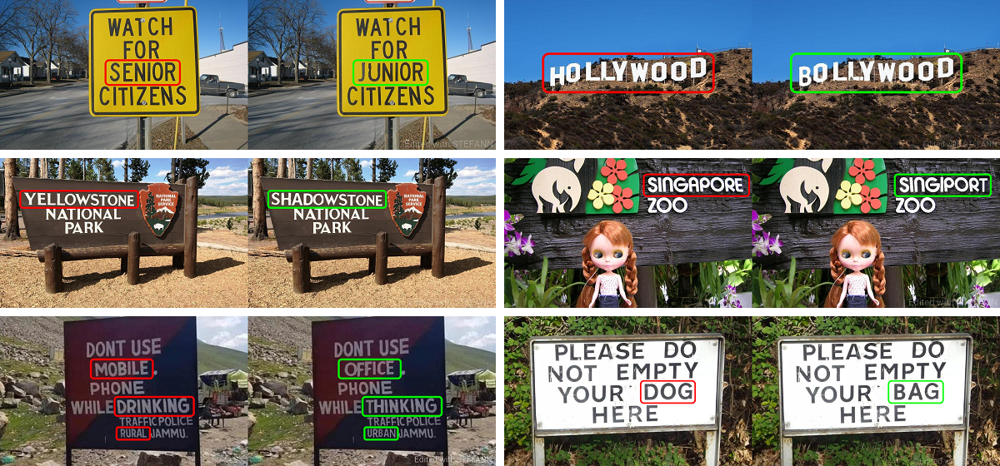

Computer Vision • Machine Learning
Kolkata, India
•
Résumé
Copyright2020 Prasun Roy
•
Made withon Earth

STEFANN: Scene Text Editor using Font Adaptive Neural Network
Prasun Roy*, Saumik Bhattacharya*, Subhankar Ghosh*, Umapada Pal
The IEEE/CVF Conference on Computer Vision and Pattern Recognition (CVPR) 2020
Project •
Paper •
Video •
Code
In this paper, we propose a generalized method for realistic modification of textual content present in a scene image.
Copyright2020 Prasun Roy
•
Made withon Earth